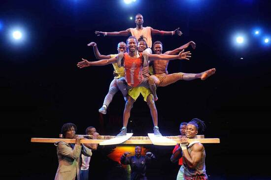
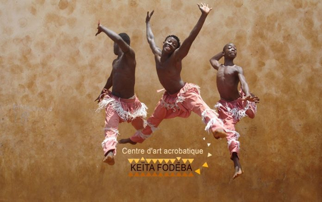
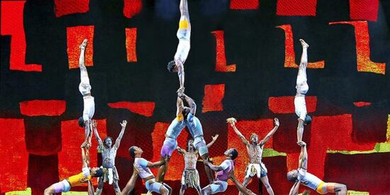

Afrika’ya özgü dans ve akrobasi gösterilerinin düzenlendiği alan.
Gine’de en ilginç yerler arasındadır. Ülkede akrobasi ilgi görüyor. Büyülü sahne performansları burada sergilenip, Afrika kıtasını kapsayan turnuvalar organize ediliyor. Sadece ünlü akrobatları görmüyorsunuz. Gençlere çeşitli beceriler kazandırmak merkezin görevlerinden biri. Başarılı olan gençlerden bazıları Amerika‘ya da gidebiliyor. Turistler belli zaman aralığında provaları izleyebilir.|   |


|